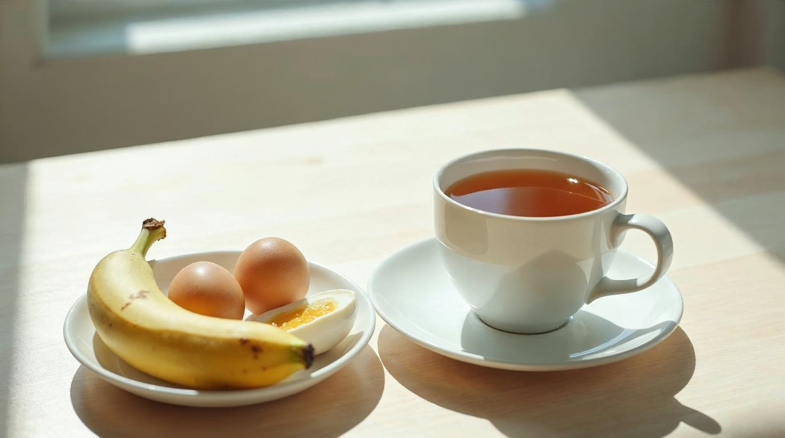
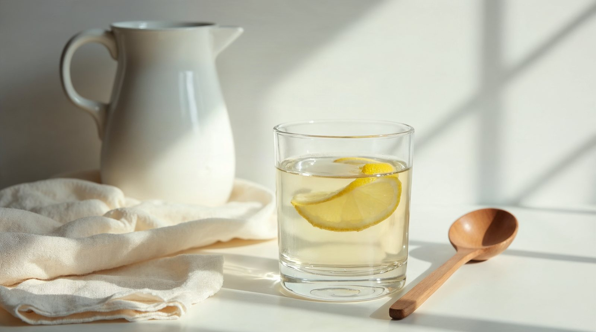
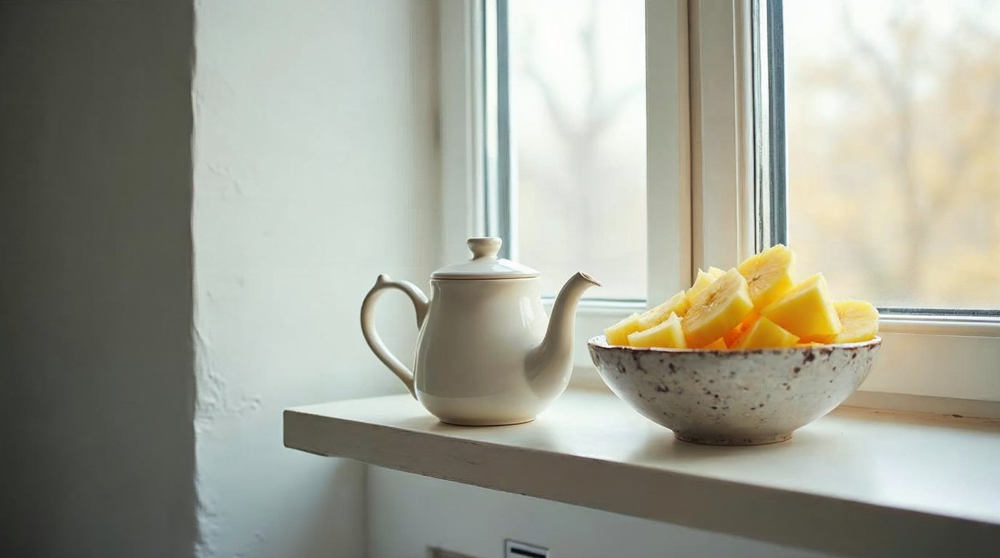
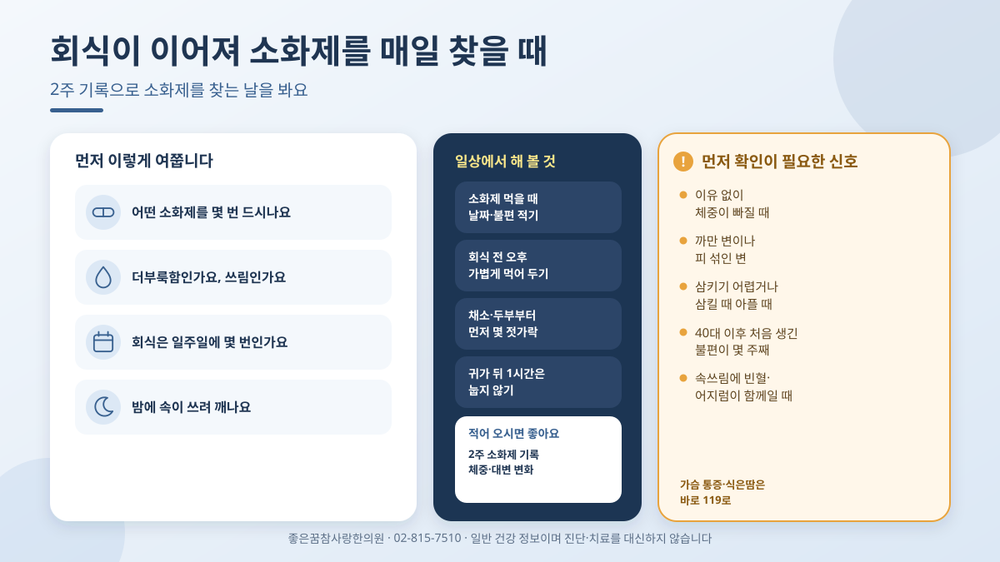

이종호 한의사 감수좋은꿈참사랑한의원 대표원장 (한의사 면허번호 19769)발행 2026-11-27 · 수정 2026-11-27
이 글의 차례
12월 들어 회식과 송년회, 거래처 저녁이 이어지면서 가방이나 책상 서랍에 액상 소화제와 알약 소화제를 넣어 두고 하루가 멀다 하고 찾게 되었다는 분이 많습니다.
소화제는 한두 번 과식한 날의 더부룩함을 덜어 주는 데 쓰일 수 있지만, 먹는 횟수가 일주일에 서너 번을 넘고 그런 날이 2주 이상 이어진다면 약으로 매번 덮기보다 속이 왜 이렇게 지쳤는지를 살펴볼 때입니다. 대개는 저녁 늦게 많이 먹는 식사, 술과 기름진 안주, 짧아진 잠, 연말 업무의 긴장이 겹쳐 위가 쉴 틈이 없는 경우가 많습니다.
먼저 어떤 소화제를 언제, 얼마나 먹었는지와 그때의 불편이 더부룩함인지 속쓰림인지부터 2주만 기록해 보고, 회식이 없는 날의 저녁을 일찍, 가볍게 비워 두는 것부터 시작해 보세요.
다만 체중이 이유 없이 빠지거나, 검은 변을 보거나, 음식을 삼키기 어렵거나, 40대 이후 처음 생긴 소화 불편이 몇 주째 이어진다면 소화제를 바꾸기보다 내시경 같은 검사를 먼저 받는 것이 좋습니다.
왜 연말에는 소화제를 찾는 날이 늘어날까요
- 회식은 대개 저녁 7시 이후 시작해 두세 시간 이어집니다. 평소보다 늦게, 길게, 많이 먹게 되어 잠자리에 들 때까지 위가 음식물을 다 내려보내지 못하기 쉽습니다.
- 삼겹살, 곱창, 튀김, 전처럼 기름진 음식은 위에 머무는 시간이 길어 다음 날 아침까지 명치가 묵직한 느낌으로 남기 쉽습니다.
- 술은 위 점막을 자극하고, 위와 식도 사이를 조여 주는 힘을 느슨하게 만들어 속쓰림과 신물을 부를 수 있습니다. 탄산이 든 맥주와 소맥은 배를 더 빵빵하게 만들기도 합니다.
- 잠이 짧아지면 장의 리듬도 흐트러져, 다음 날 입맛이 없다가 저녁에 몰아 먹는 흐름이 반복되기 쉽습니다.
- 연말 마감과 평가, 인간관계에서 오는 긴장은 위장의 움직임에도 영향을 줍니다. 신경을 많이 쓴 날 더 체한 느낌이 든다는 분이 많습니다.
- 추워서 덜 걷고, 식사 뒤 바로 앉거나 차를 타고 이동하면 소화가 더딘 느낌이 커집니다.
- 소화제를 먹으면 잠깐 편해지니 '불편하면 먹으면 된다'는 생각에 식사량 조절을 덜 하게 되는 면도 있습니다. 약이 불편을 덮는 사이 같은 생활이 이어지면 약을 찾는 간격이 점점 짧아집니다.
- 흔히 '소화제'라고 부르는 약에도 소화 효소를 보충하는 약, 위의 움직임을 돕는 약, 위산을 중화하거나 줄이는 약, 생약 성분이 든 약 등 종류가 여러 가지입니다. 불편의 종류와 맞지 않는 약을 습관처럼 고르고 있을 수도 있습니다.
- 한의학에서는 먹고 마신 것이 제때 내려가지 못하고 위에 머무는 모습을 식적(食積)이라 부르고, 지치고 긴장한 상태가 이어지면 비위의 기운이 약해져 먹은 것을 돌리는 힘이 떨어진다고 보기도 합니다.
먼저 이렇게 여쭙니다
- 어떤 소화제(액상, 알약, 가루, 위산을 줄이는 약 등)를 일주일에 몇 번, 하루 중 언제 드시는지 여쭙니다. 약 상자나 이름을 사진으로 찍어 오시면 좋습니다.
- 소화제를 찾게 되는 불편이 더부룩함인지, 명치 쓰림이나 신물인지, 트림과 가스인지, 메스꺼움인지 여쭙니다.
- 회식이나 모임이 일주일에 몇 번인지, 보통 몇 시에 끝나고 몇 시에 주무시는지 여쭙니다.
- 회식이 없는 날의 식사 시각과 양, 아침을 드시는지 여쭙니다.
- 마시는 술의 종류와 양, 술 마신 다음 날 해장을 어떻게 하시는지 여쭙니다.
- 소화제를 먹으면 얼마나 편해지는지, 먹지 않은 날은 어떤지 여쭙니다.
- 진통제, 감기약, 아스피린 같은 약을 함께 드시는지, 최근 위내시경을 언제 받으셨는지 여쭙니다.
- 체중 변화, 대변 색과 모양, 밤에 속이 쓰려 깨는 일이 있는지도 여쭙니다.

일상에서 먼저 해 볼 수 있는 것
2주 동안 소화제 기록하기
- 소화제를 먹을 때마다 날짜와 시각, 약 이름, 먹게 된 불편(더부룩함·쓰림·가스·메스꺼움), 그 전 끼니를 휴대폰 메모에 한 줄로 적습니다.
- 2주가 지나면 소화제를 먹은 날에 공통점이 있는지 봅니다. 회식 다음 날 아침에 몰리는지, 회식이 없는 날에도 먹는지에 따라 살펴볼 방향이 달라집니다.
- 회식이 없는 날에도 일주일에 두세 번 이상 먹고 있다면, 식사 습관이나 긴장, 위장 자체의 문제를 함께 확인해 보는 편이 좋습니다.
회식 날 저녁 운영하기
- 회식이 있는 날은 점심을 평소처럼 먹고, 오후 4~5시쯤 바나나 하나나 삶은 달걀처럼 가벼운 것을 먹어 둡니다. 빈속으로 가서 첫 30분에 허겁지겁 먹고 마시는 것을 줄이기 위해서입니다.
- 자리에 앉으면 고기보다 채소, 두부, 생선 같은 것을 먼저 몇 젓가락 먹고, 술잔 옆에 물 한 컵을 늘 둡니다.
- 2차, 3차로 이어질 때는 2차에서는 안주를 거의 먹지 않거나 따뜻한 차로 바꿉니다. 라면이나 국수로 마무리하는 습관은 쉬어 갑니다.
- 집에 와서 바로 눕지 말고 적어도 1시간은 씻고 정리하며 몸을 세운 채 보냅니다. 속이 쓰리면 베개를 조금 높여 왼쪽으로 누워 봅니다.
회식 다음 날 속 쉬게 하기
- 다음 날 아침은 거르기보다 미음, 죽, 누룽지, 바나나처럼 부드러운 것을 조금 먹습니다. 맵고 뜨거운 해장국이나 빈속 커피는 쓰린 속을 더 자극할 수 있습니다.
- 점심은 백반처럼 담백한 메뉴를 평소의 7~8할만 먹습니다.
- 저녁은 7시 전에 가볍게 먹고, 밤 9시 이후로는 물이나 따뜻한 보리차만 마십니다.
회식 없는 날을 '빈 날'로 두기
- 한 주에 회식이 두세 번이라면 나머지 날은 저녁을 일찍, 가볍게 먹는 '빈 날'로 정해 둡니다. 위가 일찍 비워지는 날이 끼어 있어야 다음 회식을 덜 힘들게 지나갈 수 있습니다.
- 식사 뒤 10~15분은 앉지 말고 걷습니다. 추운 날에는 사무실 복도나 건물 계단을 천천히 오르내려도 됩니다.
- 회식 다음 날이라도 평소 기상 시각은 크게 바꾸지 않고, 그날 밤 30분~1시간 일찍 잠자리에 드는 방식으로 잠을 채웁니다.
소화제를 쓰는 방법 점검하기
- 약 상자에 적힌 용법과 하루 최대 복용량, 복용 기간을 다시 읽어 봅니다. '며칠 이상 복용해도 나아지지 않으면 상담'이라는 문구가 있다면 그 기준이 이미 지났는지도 확인합니다.
- 더부룩함에 먹는 약과 속쓰림에 먹는 약은 성분이 다를 수 있습니다. 약국에서 불편의 종류를 구체적으로 말하고 맞는 약인지 물어봅니다.
- 혈압약, 당뇨약, 항응고제, 갑상선약처럼 매일 먹는 약이 있다면 소화제를 같은 시간에 함께 먹어도 되는지 약사나 처방 의사에게 확인합니다. 위산을 줄이는 약은 다른 약의 흡수에 영향을 줄 수 있어 간격을 두라는 안내를 받는 경우가 있습니다.

상황별 예시
- 예를 들어 12월 들어 회식이 주 세 번 잡힌 영업직 직장인이, 회식 다음 날 아침마다 명치가 묵직해 출근길 편의점에서 액상 소화제를 사 마시는 경우, 회식 전 오후 간식으로 빈속을 피하고 2차 안주를 줄이며, 다음 날 아침을 죽이나 바나나로 바꾸는 것부터 해 봅니다. 회식이 없는 날의 저녁을 7시 전 가벼운 식사로 비워 두었을 때 소화제를 찾는 날이 줄어드는지 2주 기록으로 확인합니다.
- 예를 들어 회식은 많지 않은데 연말 마감으로 점심을 책상에서 10분 만에 먹고 오후마다 더부룩해 소화제를 서랍에 두고 먹는 경우, 술보다 먹는 속도와 긴장 쪽에 더 큰 원인이 있는 경우가 많습니다. 점심은 자리를 떠나 20분 이상 천천히 먹고, 식후 10분 걷기를 넣어 봅니다.
- 예를 들어 회식 뒤 밤마다 가슴이 타는 듯 쓰리고 신물이 올라 소화제를 먹어도 그때뿐인 경우, 더부룩함보다는 역류 쪽 불편일 수 있어 약사나 의사에게 증상을 정확히 설명하고, 잠들기 3시간 전부터 먹지 않기와 베개 높이기를 함께 해 봅니다. 밤에 깰 정도의 쓰림이 2주 넘게 이어진다면 내과 진료를 받습니다.
- 예를 들어 50대에 들어 처음으로 소화 불편이 생겨 한 달 가까이 소화제를 먹고 있고, 최근 체중이 2~3kg 빠졌으며 위내시경을 받은 지 2년이 넘은 경우에는 생활 조절보다 내시경 검사를 먼저 받습니다.
- 예를 들어 노량진에서 공부하는 수험생이 시험을 앞두고 긴장하면 밥이 얹힌 듯해 소화제를 자주 먹는 경우, 긴장이 위장에 주는 영향을 함께 보고, 공부 사이사이 짧게 걷는 시간과 식사 시간을 정해 두는 것부터 해 봅니다.
자주 하는 오해
- 소화제는 위에 부담이 없으니 매일 먹어도 괜찮다고 여기기 쉽지만, 약마다 정해진 용법과 기간이 있고, 매일 먹어야 할 만큼 불편하다면 약보다 이유를 먼저 찾는 편이 좋습니다.
- 소화제는 다 같은 약이라고 생각하는 분이 많지만, 효소를 보충하는 약, 위의 움직임을 돕는 약, 위산을 중화하거나 줄이는 약은 쓰임이 다릅니다.
- 탄산음료를 마시면 소화가 된다고 여기기 쉬운데, 트림이 나와 시원하게 느껴질 뿐 위를 더 부풀리고 역류를 부추길 수 있습니다.
- 체했을 때는 굶는 게 낫다며 하루 종일 굶다가 밤에 몰아 먹는 분이 있습니다. 부드러운 음식을 조금씩 나눠 먹는 쪽이 위가 리듬을 되찾기 쉽습니다.
- 소화제를 먹고 편해졌으니 검사는 필요 없다고 여기기 쉽지만, 약이 증상을 가려 검사가 늦어지는 경우도 있어 경고 신호가 있거나 오래 이어지면 검사를 받습니다.
스스로 점검해 보세요
- 최근 2주 동안 소화제를 일주일에 세 번 이상 먹었다.
- 회식이 없는 날에도 소화제를 찾는다.
- 내가 먹는 소화제가 어떤 성분이고 어떤 불편에 쓰는지 잘 모른다.
- 회식이 끝나고 집에 와서 1시간 안에 눕는 날이 많다.
- 술 마신 다음 날 아침을 거르거나 맵고 뜨거운 해장국으로 시작한다.
- 잠이 6시간보다 짧은 날이 일주일에 세 번 이상이다.
- 위내시경을 받은 지 2년이 넘었거나 받아 본 적이 없다.

한의원에서 함께 살필 수 있는 경우
- 소화제를 2주 넘게 자주 먹고 있고, 내과 검사에서 큰 이상은 없다고 들은 경우
- 먹은 것이 오래 머무는 느낌, 배가 차고 묵직한 느낌, 긴장하면 체하는 느낌이 반복되는 경우
- 연말 일정 속에서 식사와 잠, 술을 어떻게 조절할지 함께 정리하고 싶은 경우
- 소화 불편과 함께 피로, 두통, 어깨 결림, 얕은 잠이 겹친 경우
좋은꿈참사랑한의원에서는 첫 방문 때 어떤 소화제를 언제, 얼마나 드시는지와 불편의 종류, 회식 일정과 식사 시각, 잠, 술, 요즘 마음을 쓰는 일을 먼저 차례로 듣습니다. 그다음 맥부터 짚어 보고, 혀의 색과 설태, 배를 눌렀을 때 명치가 단단하거나 아픈 곳, 배가 찬 곳이 있는지를 살펴 먹은 것이 어디에 머무는지, 몸이 얼마나 지쳐 있는지 확인합니다.
필요하면 인바디 770으로 체성분을, 혈액 검사기로 기본 상태를 함께 보기도 하며, 검사 가능한 항목은 방문 전 전화로 확인해 주세요. 그 결과를 바탕으로 회식 날과 다음 날, 빈 날의 식사를 어떻게 나눌지 함께 정하고, 필요하면 침이나 뜸, 한약을 상의합니다.
체중 감소나 검은 변처럼 검사가 먼저 필요해 보이는 신호가 있으면 내과 진료와 내시경을 먼저 안내해 드립니다. 다시 오시면 지난번 정한 방법을 해 보신 기록과 소화제 횟수를 이어서 보며 조절 방향을 다듬습니다.
얼마나 지켜보고 언제 상담할까요
- 회식 날 운영과 다음 날 식사, 빈 날 정하기를 2주 동안 해 보며 소화제 횟수를 기록합니다. 횟수가 줄어든다면 그 방식을 연말 내내 이어 갑니다.
- 2주가 지나도 소화제를 일주일에 세 번 이상 찾거나, 회식이 없는 날에도 불편이 계속되면 상담을 받아 보세요.
- 소화제 상자에 적힌 복용 기간이 지났는데도 계속 먹고 있다면, 그때가 약사나 의사와 상의할 시점입니다.
- 아래 신호가 있다면 기다리지 말고 검사를 먼저 받습니다.
이렇게 기록해 오시면 상담이 쉬워집니다
- 2주 동안의 소화제 복용 기록(날짜, 시각, 약 이름, 먹게 된 불편)
- 먹고 있는 소화제 상자나 약 봉투 사진
- 회식과 모임 날짜, 끝난 시각, 마신 술의 종류와 양
- 회식 없는 날의 식사 시각과 메뉴, 잠드는 시각
- 최근 위내시경 날짜와 결과, 복용 중인 약과 영양제
- 체중 변화와 대변 색, 모양
이런 증상은 먼저 확인이 필요합니다
- 이유 없이 체중이 빠지거나, 조금만 먹어도 배가 불러 식사량이 계속 줄어드는 경우
- 짜장처럼 까맣고 끈적한 변이나 피가 섞인 변을 보거나, 피나 커피 찌꺼기 같은 것을 토하는 경우
이런 신호가 있으면 한의원보다 가까운 병원이나 응급실을 먼저 찾으세요.
관련 글
- 연말에 한 주에 회식이 세 번이면 속을 어떻게 쉬게 하나요?
- 체한 것처럼 명치가 막히고 답답할 때는 어떤 점을 살펴보나요?
- 속쓰림 약을 오래 먹고 있다면 한의원 상담 때 무엇을 알려야 하나요?

여쭙는 것
- 어떤 소화제(액상, 알약, 가루, 위산을 줄이는 약 등)를 일주일에 몇 번, 하루…
- 소화제를 찾게 되는 불편이 더부룩함인지, 명치 쓰림이나 신물인지, 트림과 가스인지,…
- 회식이나 모임이 일주일에 몇 번인지, 보통 몇 시에 끝나고 몇 시에 주무시는지 여쭙…
생활에서 해 볼 것
- 소화제를 먹을 때마다 날짜와 시각, 약 이름, 먹게 된 불편(더부룩함·쓰림·가스·메…
- 2주가 지나면 소화제를 먹은 날에 공통점이 있는지 봅니다. 회식 다음 날 아침에 몰…
- 회식이 없는 날에도 일주일에 두세 번 이상 먹고 있다면, 식사 습관이나 긴장, 위장…
한의원에서 함께 살필 것
- 소화제를 2주 넘게 자주 먹고 있고, 내과 검사에서 큰 이상은 없다고 들은 경우
- 먹은 것이 오래 머무는 느낌, 배가 차고 묵직한 느낌, 긴장하면 체하는 느낌이 반복…
- 연말 일정 속에서 식사와 잠, 술을 어떻게 조절할지 함께 정리하고 싶은 경우
먼저 확인이 필요한 신호
- 이유 없이 체중이 빠지거나, 조금만 먹어도 배가 불러 식사량이 계속 줄어드는 경우
- 짜장처럼 까맣고 끈적한 변이나 피가 섞인 변을 보거나, 피나 커피 찌꺼기 같은 것을…
한눈에 보는 표
| 구분 | 핵심 |
|---|---|
| 여쭙는 것 | 어떤 소화제(액상, 알약, 가루, 위산을 줄이는 약 등)를 일주일에 몇 번, 하루 중 언제 드시는지 여쭙니다. 약 상자나 이름을 사진으로 찍어 오시면 좋습니다. 소화제를 찾게 되는 불편이 더부룩함인지, 명치 쓰림이나 신물인지, 트림과 가스인지, 메스꺼움인지 여쭙니다. |
| 생활에서 해 볼 것 | 소화제를 먹을 때마다 날짜와 시각, 약 이름, 먹게 된 불편(더부룩함·쓰림·가스·메스꺼움), 그 전 끼니를 휴대폰 메모에 한 줄로 적습니다. 2주가 지나면 소화제를 먹은 날에 공통점이 있는지 봅니다. 회식 다음 날 아침에 몰리는지, 회식이 없는 날에도 먹는지에 따라 살펴볼 방향이 달라집니다. |
| 한의원에서 함께 살필 것 | 소화제를 2주 넘게 자주 먹고 있고, 내과 검사에서 큰 이상은 없다고 들은 경우 먹은 것이 오래 머무는 느낌, 배가 차고 묵직한 느낌, 긴장하면 체하는 느낌이 반복되는 경우 |
| 먼저 확인이 필요한 신호 | 이유 없이 체중이 빠지거나, 조금만 먹어도 배가 불러 식사량이 계속 줄어드는 경우 짜장처럼 까맣고 끈적한 변이나 피가 섞인 변을 보거나, 피나 커피 찌꺼기 같은 것을 토하는 경우 |
자주 묻는 질문
소화제를 매일 먹어도 괜찮나요?
약마다 정해진 용법과 복용 기간이 있어 상자에 적힌 안내를 먼저 확인해 주세요. 매일 찾을 만큼 불편한 날이 2주 넘게 이어진다면 약을 바꾸기보다 이유를 살피고, 필요하면 검사를 받아 보는 편이 좋습니다.
더부룩할 때와 속이 쓰릴 때 먹는 소화제가 다른가요?
흔히 소화제라고 부르는 약에도 효소를 보충하는 약, 위의 움직임을 돕는 약, 위산을 중화하거나 줄이는 약 등이 있어 쓰임이 다릅니다. 약국에서 불편의 종류를 구체적으로 말하고 맞는 약인지 물어보세요.
회식 다음 날 아침은 굶는 게 나은가요?
하루 종일 굶다가 밤에 몰아 먹으면 다시 속이 지치기 쉽습니다. 죽이나 미음, 바나나처럼 부드러운 것을 조금 먹고, 점심은 담백하게, 저녁은 일찍 가볍게 먹는 쪽을 권합니다.
소화제를 먹으면 편해지는데도 내시경을 받아야 하나요?
체중 감소, 검은 변, 삼키기 어려움, 40대 이후 새로 생긴 불편이 몇 주째 이어지는 경우에는 약으로 편해지더라도 검사가 먼저입니다. 위내시경을 받은 지 오래되었다면 이번 기회에 일정을 확인해 보세요.
한의원에서는 소화제를 자주 먹는 사람을 어떻게 살피나요?
어떤 약을 언제 드시는지와 식사, 술, 잠, 긴장을 먼저 여쭙고 맥부터 짚어 봅니다. 혀와 배를 살펴 먹은 것이 오래 머무는지, 몸이 얼마나 지쳐 있는지 확인한 뒤 회식 날과 빈 날의 식사를 함께 정합니다.
좋은꿈참사랑한의원은 재진 때 지난번 이야기부터 이어서 여쭙니다. 진료시간과 예약은 오시는 길에서 확인하세요.
어디서 상담받을 수 있나요?
좋은꿈참사랑한의원은 서울 동작구 만양로2길 2 신성빌딩 3층·5층(서울 동작구 상도동, 7호선 상도역 3번 출구 근처)에 있습니다. 한의사 3명(이종호 대표원장, 조영기 수석진료원장, 정원영 진료원장)이 진료합니다. 진료시간은 평일 09:30~20:00(점심 13:00~14:00), 토·일·공휴일 09:30~15:00이며, 방문 전 전화로 확인을 권합니다. 예약은 네이버 예약, 카카오톡 상담, 전화 02-815-7510로 받습니다.
이 글은 일반적인 건강 정보이며 개인의 진단이나 치료를 대신하지 않습니다. 증상이 있거나 복용 중인 약이 있다면 진료를 통해 확인하세요. 치료 효과는 개인마다 다를 수 있습니다.
작성 기준: 일반적으로 알려져 있는 건강 정보를 참고해 정리했습니다(대표원장 감수). 증상 기록은 1~2주 동안 하루 1회, 비슷한 시간에 적어 오시면 지난 상태와 비교하기 쉽습니다.